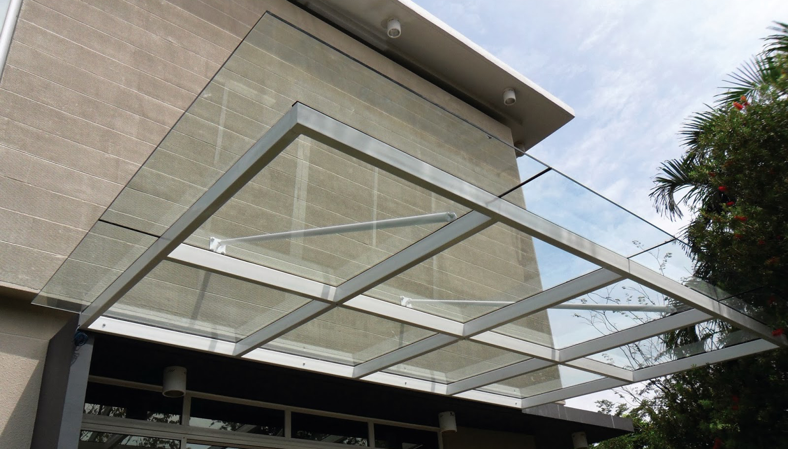

Kaca adalah salah satu unsur yang cukup penting pada sebuah bangunan bagus untuk rumah tinggal, pertokoan, gedung bertingkat ataupun multi use building. Fungsi utama kaca adalah sebagai pencahayaan alami dan juga sebagai bagian dari estetika bangunan. Kaca juga biasa diterapkan sebagai material untuk pintu, furnitur, railing tangga, shower box, kanopi, table top, dan bahkan panel dinding.
Ragam-tipe kaca diantara lain kaca tempered, kaca shower, railing kaca, kanopi kaca dan masih banyak lagi. Setiap kaca memiliki fungsi masing-masing yang membuat banyak orang kian mebutuhkannya dari hari ke hari. Berikut ini sedikit review mengenai kaca bagi sebuah banguanan, fungsi utama dan bagaiman memilih kaca yang pantas untuk sebuah hunian bagus rumah, kantor maupun gedung. Akan di jelaskan juga mengenai lantai kayu jati terbaik yang dapat anda beli.
Jasa Pemasangan Kubikel Toilet di Bontang
Ketika ini banyak desain toilet yang didominasi oleh kubikel/cubicle Bontang yang memiliki tampilan lebih modern dan mewah.
Anda juga bisa membuat kamar kecil di space yang lebih kecil dan tak memerlukan lahan yang semacam itu besar untuk membuat toilet yang banyak. Kaca juga dapat menjadi solusi estetika kamar mandi, melainkan juga dapat jadi situasi sulit seandainya Anda mengaplikasikan material dan tempat yang salah. WC kubikel juga memberikan hal yang efisien dan tepat sasaran dalam pembagian space kamar mandi yang kecil.
Harga yang ditawarkan malahan cukup terjangkau.
Karena disana terdapat berbagai ukuran kubikel toilet Bontang yang dapat anda jadikan pilihan untuk hunian atau temap usaha anda. Justru embun dapat melekat di kaca dan lambat laun bisa membikin kaca tak sejernih semula. Kaca shower yang di jual di jamin kaca shower yang mempunyai kwalits terbaik dan bermutu tinggi.
Distributor & Supplier Kaca Shower
Pintu Kaca Shower pada kamar mandi ialah salah satu pilihan yang baik untuk desain interior kamar mandi modern. Dengan menerapkan kaca shower pastinya kamar mandi yang dimiliki akan lebih menonjol mewah dan menjadi sekat antara area berair dan zona kering. Kaca shower ini bisa menjadi dan mempunyai skor estetika tersendiri karena dengan memasangnya tentu kamar mandi anda akan nampak lebih cantik dan mewah layknya kamar mani hotel. Jadi sistemnya jauh lebih praktis sebab tidak perlu menyiapkan bahan sendiri untuk membuat sekat ruang. Tentunya banyak kelebihan yang dapat di peroleh dari pemakaian kaca shower pada kamar mandi di rumah anda.
Tidak anda sedang memerlukan kaca shower untuk kamar mandi anda, anda bisa segera mengunjungi dis.or.id. Tak terbaik dan harga relatif murah. Anda dapat buktikan sendiri.
Distributor, Supplier & Jasa Pasang Kanopi Kaca

Salah satu ragam kanopi kaca yang bisa anda aplikasikan pada atap ialah atap kaca skylight yang ialah kanopi kaca dalam wujud jendela horizontal atau kubah yang biasanya ditempatkan di atap bangunan yang memiliki maksud untuk pencahayaan ruangan. Anda bisa memilih kanopi kaca yang layak dengan keperluan dan kemauan anda. Atap kaca skylight ditujukkan untuk menerima sinar alami UV yang mempunyai fungsi sebagai penerangan dalam sebuah ruang. Harga atap kaca per meter persegi juga sungguh-sungguh dipengaruhi oleh struktur penunjang yang di gunakan. Disinilah letak perbedaan optis yang utama antara akrilik (acrylic) dengan kaca. Seandainya tembus pandang, kaca menyerap sinar yang masuk sehingga semakin tebal kaca karenanya semakin sedikit sinar yang bisa melaluinya, karenanya sifat transparannya makin berkurang.|Di samping pintu kaca shower akan membuat kamar mandi kecil terlihat lebih besar. Pada atap akrilik, absorpsi sinar yang terjadi demikian kecil sehingga walaupun ketebalannya bertambah, sifat transparannya tak banyak berubah. Atap akrilik atau bisa juga disebut atap kaca acrylic ini banyak ditemukan di sebuah bangunan rumah, seperti ruko, apartemen, cafe, mall, sampai bangunan gedung.
Dis.or.id dapat menolong anda yang mau memasang atap kaca skylight pada gedung, dengan beragam kelebihan yang bisa anda peroleh dengan memanfaatkan jasa yang di tawarkan dis.or.id. Banyak bangunan seperti gedung perkantoran, perumahan, ruko dan apartement yang memakai kanopi kaca tempered. Disana anda akan mendapatkan kanopi kaca yang sesuai dengan berbagai ketebalan dan harga yang cukup relatif murah.
Jasa Maintenance Kaca
Jasa maintenance kaca menjadi solusi bagi Anda yang memiliki gedung yang terbuat dari kaca. Kaca menjadi kusam. Peralatan jenis kotoran seperti debu serta cahaya sang surya dan juga hujan sering kali membuat kaca gedung menjadi kusan dan tak menarik.
Sekarang juga hadir maintenance kaca untuk membersihkan kaca berbentuk melengkung. Apabila juga dengan warna dan bentuk kaca.
Tidak anda berminat, anda dapat seketika mengunjungi website dis.or.id untuk mengamati isu lebih lanjut mengenai jasa maintenance kaca yang di tawarkan. Untuk itu, alat-alat patut lengkap sehingga kami mampu membersihkan segala sudut gedung. Dis.or.id memiliki seluruh tenaga ahli yang di rekrut hanya mereka yang profesional yang tahu persis bagaimana sistem mengaplikasikan alat dan bagaimana membersihkan kaca gedung bertingkat. Dengan sudah memberikan training terhadap tenaga ahli sehingga mereka sudah bisa melakukan pekerjaan mereka dengan sangat bagus. Kecuali cuma dalam hal membersihkan kaca, mereka juga sanggup melaksanakan pembetulan serta penggantian kaca yang mengalami kerusakan.
Jasa Pemasangan Kaca Tempered

Kini jasa pemasangan kaca tempered menjadi pilihan yang tepat saat Anda mau memiliki sebuah hunian atau gedung perkantoran yang komponen tertentu terbuat dari kaca tempered. Dibutuhkan kaca ini dihasilkan dari kaca float berkwalitas tinggi melewati proses pemanasan thermal di mana kaca dipanaskan hingga pada spot lunak kemudian didinginkan dengan cepat. Sementara itu, untuk rumah hunian, komponen dari rumah seperti kamar mandi serta kanopi umumnya terbuat dari kaca tempered. Kecuali sembarang tukang juga dapat melakukan pengerjaan pemotongan ini. Selain ini tak lain karena semakin banyak orang yang memahami mutu serta keunggulan dari kaca tempered ini.
Disana anda dapat memanfaatkan jasa pemasangan kaca tempered untuk seluruh macam bidang maupun bangunan. Tak saat ini anda sedang ingin membangun suatu bangunan atau gedung, anda bisa memanfaatkan kaca tempered untuk diterapkan lantas ke seluruh jenis bidang. Dis.or.id menawarkan jasa pemasangan kaca tempered karena kami mempunyai alat yang komplit. Anda bisa langsung mengunjungi dis.or.id untuk mendapatkan info mengenai jasa pemasangan kaca tempered, menerapkan kaca tempered dan pastinya hasil yang diberi pun akan layak dengan apa yang Anda inginkan.
Distributor & Supplier Pintu Kaca
Kini sudah tersedia bermacam ragam dan berbagai model pintu kaca yang sedang menjadi popularitas saat ini. Ada banyak desain pintu kaca yang bisa kita temui seperti pintu kaca berbentuk sliding (geser) atau folding (lipat). Tak Anda ingin memiliki pintu kaca lipat yang terdiri dari sebagian bingkai. Tersedia sebagian macam kaca dengan mutu yang terbaik, mulai dari kaca tempered hingga yang non-tempered. sebagian jenis kaca yang paling sering diterapkan untuk membuat pintu kaca, mulai dari jenis kaca tempered sampai kaca non-tempered. Dalam hal ini, terdapat beberapa macam kaca dengan kualitas yang terbaik. Sekarang paling banyak diminati saat ini ialah kaca tempered sebab jauh lebih kuat dan bendung lama.
Dis.or id siap membantu anda untuk membuatkan pintu kaca idaman anda. Jikalau spesialis yang sungguh-sungguh profesional sehingga betul-betul siap untuk menghasilkan pintu kaca seperti apa yang mau Anda miliki.
Dis.or.id juga menyiapkan sebagian variasi kaca dengan ketebalan yang berbeda. Anda dapat memilih kaca tempered yang kini ini sedang naik daun.
Jual Kaca Cermin
Ini tak cuma sebagai kaca cermin persegi. kaca cermin umum diaplikasikan pada bukaan pintu atau jendela dinding luar, yang nantinya diharapkan berpenampilan mewah pada bangunan. Ukurannya pun bisa Anda sesuaikan dengan keperluan. Ada cermin persegi yang ditempel beraturan, cermin berbentuk seperti daun, dan lain sebagainya. Ada cermin yang didesain unik seperti penyerupai daun, oval, dan lain sebagainya. Sementara itu, dikala diperhatikan dari luar, kaca ini reflektif. Cermin minimalis mempunyai siku. Anda seolah sedang bercermin.
Malahan, Anda dapat pakai kaca cermin ini sekalian sebagai material utama, seperti sebagai pintu lemari di kamar tidur Anda. Malahan, ada juga furniture berupa pintu yang terbuat dari kaca cermin. Anda dapat menambahkan frame atau tanpa frame pantas dengan kesukaan Anda. Cermin ini umumnya ditempatkan di kamar mandi, di atas wastafel, atau di kamar tidur. Tersedia kaca cermin dengan beragam ukuran yang dapat anda pesan di dis.or.id. Harga yang terjangkau dan mutu terbaik ialah ciri khas dari dis.or.id. Dis.or.id menyediakan kaca cermin yang dapat anda beli dengan harga yang amat murah dan dengan kwalitas terbaik. Tidak anda berminat untuk memiliki kaca cermin bagus sebagai pemanis ruangan atau sebagai pintu, anda dapat lantas mengunjungi dis.or.id. Disana anda dapat mendapatkan kaca cermin yang cocok dengan keinginan anda.
Jasa Pemasangan Railing Kaca
Railing kaca yaitu opsi yang pas ketika Anda menghendakin desain interior rumah yang minimalis. Anda tak cuma ditawarkan dengan figur atau desain railing kaca yang sama. Anda bisa memilih desain sesuka hati Anda. Tapi, Anda harus pastikan railing kaca berkualitas terbaik. Pun juga bahan yang diaplikasikan.
Tidak ini tak cuma ditetapkan oleh ketebalan atau harga melainkan juga oleh jenis. Ada kaca tempered yang kini diminati banyak orang. Bila itu, kaca ini bisa pecah melainkan tak memunculkan pecahan yang runcing tapi pecahan kecil-kecil dan lembut.
Kini dis.or.id telah menyediakan railing kaca berkulitas dan berkwalitas. Tentu dengan harga yang murah tapi konsisten berkelas.
Distributor & Supplier Pintu Lipat Kaca
Sebab keunggulan yang dimiliki hal yang demikian, Anda pasti berpikir harga pintu kaca lipat frameless ini mahal. Secara awam, kaca dibagi menjadi 6 variasi, merupakan kaca jernih, kacang berwarna atau tinted glass, kaca es, kaca cermin atau one way glass, kaca laminasi, dan yang terakhir kaca tempered. Sekarang pasti, modelnya banyak pantas dengan yang Anda butuhkan.
Harga pintu kaca lipat frameless ini benar-benar diberi pengaruh oleh ukuran lebar dan tingginya pintu. Pastikan Anda memilih kaca tempered kualitas terbaik supaya pintu lipat yang Anda pesan dapat diterapkan dalam kurun waktu yang betul-betul lama.
Distributor & Supplier Partisi Kaca

Partisi kaca kini cuma dijumpai di perkantoran modern atau sentra perbelanjaan. Anda dapat bandingkan sendiri berapa yang Anda harus siapkan untuk partisi tembok. Anda patut beli batu bata, pasir, dan semen. Tidak hanya rumah, perkantoran juga diwujudkan sedemikian rupa agar nampak sangat minimalis dan menarik. Pun ruangan disekat dengan partisi ini seperti kamar mandi dalam dan taman dalam ruangan. Anda bisa menggunakan partisi kaca ini sebagai penyekat beberapa ruangan seperti kamar mandi dalam, taman dalam ruangan, ruangan bermain di dalam rumah, dan lain sebagainya. Anda sepatutnya tahu ada kaca transparan, semi transparan dan kaca yang sama sekali transparan yang tak jarang disebut dengan kaca cermin. Selain itu, model partisi kaca ada yang frameless (tanpa bingkai) dan juga ada yang frame. Jikalau anda kesulitan untuk memasang dinding kaca penyekat, dis.or.id menyediakan jasa pemasangan dinding kaca penyekat untuk kamar mandi rumah anda.